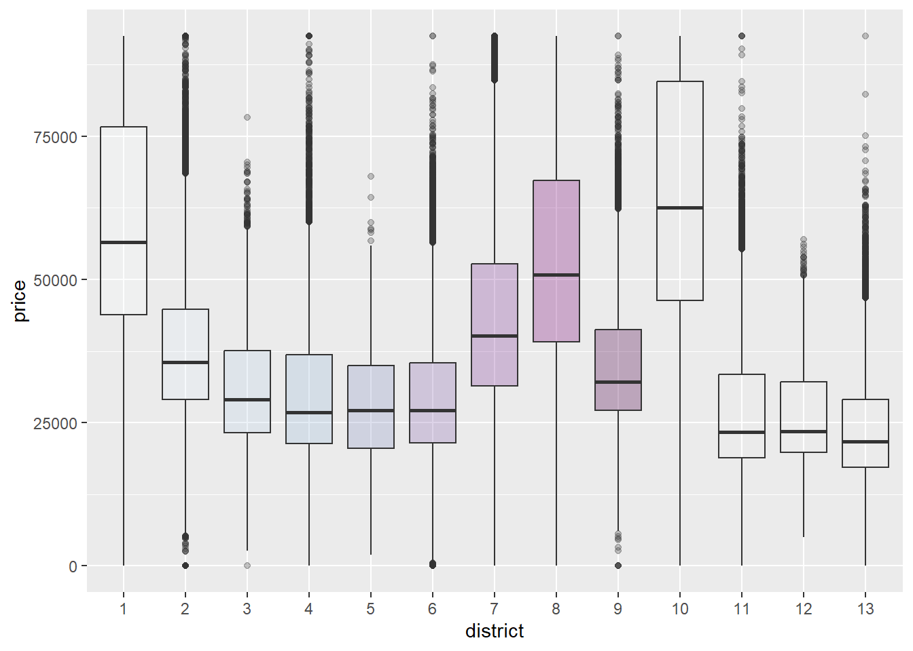

Housing Price Prediction via Improved Machine Learning Techniques
Reproduction of Quang Truong, Minh Nguyen, Hy Dang and Bo Mei research
The purpose of the original article was to prepare a model predicting housing prices in Beijing and to determine the impact of various characteristics on property prices. As part of our work on the reproduction of a given article, we used the R language with its libraries (the analysis in the initial article was carried out with the help of Python).
Data
Read data with “gbk” encoding for Chinese signs and getting some columns insights
```{r}
#read csv as dataframe
housing_prices_data <- as.data.frame(read.csv("new.csv",fileEncoding="gbk", header = TRUE)) #fileEncoding='gbk' is chinese signs encoding
str(housing_prices_data)
```'data.frame': 318851 obs. of 26 variables:
$ url : chr "https://bj.lianjia.com/chengjiao/101084782030.html" "https://bj.lianjia.com/chengjiao/101086012217.html" "https://bj.lianjia.com/chengjiao/101086041636.html" "https://bj.lianjia.com/chengjiao/101086406841.html" ...
$ id : chr "101084782030" "101086012217" "101086041636" "101086406841" ...
$ Lng : num 116 116 117 116 116 ...
$ Lat : num 40 39.9 39.9 40.1 39.9 ...
$ Cid : num 1.11e+12 1.11e+12 1.11e+12 1.11e+12 1.11e+12 ...
$ tradeTime : chr "2016-08-09" "2016-07-28" "2016-12-11" "2016-09-30" ...
$ DOM : num 1464 903 1271 965 927 ...
$ followers : int 106 126 48 138 286 57 167 138 218 134 ...
$ totalPrice : num 415 575 1030 298 392 ...
$ price : int 31680 43436 52021 22202 48396 52000 37672 49521 27917 55883 ...
$ square : num 131 132 198 134 81 ...
$ livingRoom : chr "2" "2" "3" "3" ...
$ drawingRoom : chr "1" "2" "2" "1" ...
$ kitchen : int 1 1 1 1 1 1 1 1 1 0 ...
$ bathRoom : chr "1" "2" "3" "1" ...
$ floor : chr "高 26" "高 22" "中 4" "底 21" ...
$ buildingType : num 1 1 4 1 4 4 4 1 3 1 ...
$ constructionTime : chr "2005" "2004" "2005" "2008" ...
$ renovationCondition: int 3 4 3 1 2 3 4 4 1 4 ...
$ buildingStructure : int 6 6 6 6 2 6 2 6 2 6 ...
$ ladderRatio : num 0.217 0.667 0.5 0.273 0.333 0.333 0.5 0.667 0.333 0.308 ...
$ elevator : num 1 1 1 1 0 1 0 1 0 1 ...
$ fiveYearsProperty : num 0 1 0 0 1 1 0 1 0 1 ...
$ subway : num 1 0 0 0 1 0 0 0 0 1 ...
$ district : int 7 7 7 6 1 7 7 7 13 1 ...
$ communityAverage : num 56021 71539 48160 51238 62588 ...Data cleaning
In the original article, attributes describing the number of kitchens, bathrooms and drawing rooms were removed due to their ambiguity. We decided to keep them and give them a chance in further analysis. Columns such as “ID” or “URL” were removed. As in the article, we removed the variable “DOM” (“Day on market”) because as many as 49.5% of the observations contained empty values for this variable. As in the article, we decided to remove records containing any null values - the percentage of such cases was very low, so this decision did not significantly affect further work.
```{r}
#drop unnecessary columns
drop_cols <- c("url","id")
housing_prices_data <- housing_prices_data[ , !(names(housing_prices_data) %in% drop_cols)]
# finds the count of missing values as % of the whole dataset
colMeans(is.na(housing_prices_data))*100
housing_prices_data <- housing_prices_data[ , !(names(housing_prices_data) %in% "DOM")]
#Now we are going to check how many rows have missing values
obs_with_nulls <- housing_prices_data[!complete.cases(housing_prices_data),]
#Distributions of full dataset and null-rows-dataset are similar. Also there is only 2403 obs of rows with null values.
#Then we can delete rows with NULLs.
housing_prices_data_clean <- na.omit(housing_prices_data)
``` Lng Lat Cid tradeTime
0.00000000 0.00000000 0.00000000 0.00000000
DOM followers totalPrice price
49.54571257 0.00000000 0.00000000 0.00000000
square livingRoom drawingRoom kitchen
0.00000000 0.00000000 0.00000000 0.00000000
bathRoom floor buildingType constructionTime
0.00000000 0.00000000 0.63383838 0.00000000
renovationCondition buildingStructure ladderRatio elevator
0.00000000 0.00000000 0.00000000 0.01003604
fiveYearsProperty subway district communityAverage
0.01003604 0.01003604 0.00000000 0.14520889 Data preprocessing
In the process of preparing the data for modeling, we performed the necessary transformations of the variables. From the variable “floor” we extracted the height of the floor, getting rid of its type in contrast to the original article. The type describes the height just like a numerical value, so it doesn’t make sense to keep both variables. We replaced the “Unknown” values of the Age calculated variable with the average of ConstructionTime. We also truncated categories such as “renovationCondition” to reduce the number of levels of variables with similar or nearly identical business overtones. We created new additional variables that were not created as part of the initial article - such as “avgRoomSize,” which describes the average size of usable rooms in a given apartment. We also got rid of outliers using Inter-Quartile Range (IQR).
```{r}
summary(housing_prices_data_clean)
#converting some variables to number
housing_prices_data_clean$livingRoom <- as.integer(housing_prices_data_clean$livingRoom)
housing_prices_data_clean$drawingRoom <- as.integer(housing_prices_data_clean$drawingRoom)
housing_prices_data_clean$bathRoom <- as.integer(housing_prices_data_clean$bathRoom)
#Division of signs and numbers (floor type and height)
housing_prices_data_clean$floorType <- substring(housing_prices_data_clean$floor,1,2)
housing_prices_data_clean$floorNum <- as.integer(substring(housing_prices_data_clean$floor,3,length(housing_prices_data_clean$floor)-2))
housing_prices_data_clean <- housing_prices_data_clean[ , !(names(housing_prices_data_clean) %in% "floor")]
# Floor types translation - is like a group of floorNum then it can be removed
# 高 - High
# 未知 - Unknown
# 顶 - Top
# 低 - Low
# 底 - Bottom
# 中 - Medium
#Calculation of distance between home and Beijing city center (Forbidden City coordinates in our case)
BeijingCenterLat <- 39.91690639140218
BeijingCenterLng <- 116.39716443298232
#Haversine distance to get result in kilometers
housing_prices_data_clean$distance <- distHaversine(p1=housing_prices_data_clean[,c("Lng","Lat")],c(BeijingCenterLng,BeijingCenterLat))/1000
#Age -> construction time - current year
current_year <- as.numeric(format(Sys.Date(),"%Y"))
#Check frequency
table(housing_prices_data_clean$constructionTime)
#If unknown then use "Average" OR Maybe we should get rid off AGE/Construction Time variable
meanConcstrTime <- round(mean(as.integer(housing_prices_data_clean$constructionTime),na.rm = TRUE))
housing_prices_data_clean$age <- ifelse(housing_prices_data_clean$constructionTime=='未知',current_year-meanConcstrTime,current_year - as.integer(housing_prices_data_clean$constructionTime))
housing_prices_data_clean <- housing_prices_data_clean[ , !(names(housing_prices_data_clean) %in% "constructionTime")]
##changing numeric to categories factors
housing_prices_data_clean$buildingType <- ifelse(housing_prices_data_clean$buildingType==1,"Tower",ifelse(housing_prices_data_clean$buildingType==2,"Bungalow",ifelse(housing_prices_data_clean$buildingType==3,"Plate and Tower","Plate")))
#Bungalow building Types will be deleted from dataset since they are outliers and bungalow is completely different than other types
housing_prices_data_clean <- housing_prices_data_clean[housing_prices_data_clean$buildingType != "Bungalow", ]
housing_prices_data_clean$buildingType <- as.factor(housing_prices_data_clean$buildingType)
housing_prices_data_clean$renovationCondition <- ifelse(housing_prices_data_clean$renovationCondition==1,"Other",ifelse(housing_prices_data_clean$renovationCondition==2,"Rough",ifelse(housing_prices_data_clean$renovationCondition==3,"Simplicity","Hardcover")))
# Rough renovation condition will be assign to Hardcover
housing_prices_data_clean$renovationCondition <- as.factor(ifelse(housing_prices_data_clean$renovationCondition=="Rough","Hardcover",housing_prices_data_clean$renovationCondition))
housing_prices_data_clean$buildingStructure <- ifelse(housing_prices_data_clean$buildingStructure==1,"Unknow",ifelse(housing_prices_data_clean$buildingStructure==2,"Mixed",ifelse(housing_prices_data_clean$buildingStructure==3,"Brick and wood",ifelse(housing_prices_data_clean$buildingStructure==4,"Brick and concrete",ifelse(housing_prices_data_clean$buildingStructure==5,"Steel","Steel-concrete composite")))))
##Dealing with outliers
housing_prices_data_clean$buildingStructure <- as.factor(ifelse(housing_prices_data_clean$buildingStructure=="Steel","Steel-concrete composite",ifelse(housing_prices_data_clean$buildingStructure=="Brick and wood","Mixed",ifelse(housing_prices_data_clean$buildingStructure=="Unknow","Mixed",housing_prices_data_clean$buildingStructure))))
#housing_prices_data_clean$floorType <- as.factor(housing_prices_data_clean$floorType)
housing_prices_data_clean$elevator <- ifelse(housing_prices_data_clean$elevator==1,"Elevator","noElevator")
housing_prices_data_clean$elevator <- as.factor(housing_prices_data_clean$elevator)
housing_prices_data_clean$fiveYearsProperty <- ifelse(housing_prices_data_clean$fiveYearsProperty==1,"isFiveYProp","noFiveYProp")
housing_prices_data_clean$fiveYearsProperty <- as.factor(housing_prices_data_clean$fiveYearsProperty)
housing_prices_data_clean$subway <- ifelse(housing_prices_data_clean$subway==1,"Subway","NoSubway")
housing_prices_data_clean$subway <- as.factor(housing_prices_data_clean$subway)
housing_prices_data_clean$district <- as.factor(housing_prices_data_clean$district)
#char to Date
housing_prices_data_clean$tradeTime <- as.Date(housing_prices_data_clean$tradeTime)
##New feature - average size of a room
housing_prices_data_clean$avgRoomSize <- housing_prices_data_clean$square/(housing_prices_data_clean$livingRoom + housing_prices_data_clean$drawingRoom + housing_prices_data_clean$kitchen + housing_prices_data_clean$bathRoom)
housing_prices_data_clean$totalPrice <- housing_prices_data_clean$totalPrice * 10000 #real scale
#########
##INFO:
## totalPrice is price (average price by sqrt * square) * 10 000
##Currency is yuan
########
``` Lng Lat Cid tradeTime
Min. :116.1 Min. :39.63 Min. :1.111e+12 Length:316448
1st Qu.:116.3 1st Qu.:39.89 1st Qu.:1.111e+12 Class :character
Median :116.4 Median :39.93 Median :1.111e+12 Mode :character
Mean :116.4 Mean :39.95 Mean :1.125e+12
3rd Qu.:116.5 3rd Qu.:40.00 3rd Qu.:1.111e+12
Max. :116.7 Max. :40.25 Max. :1.185e+14
followers totalPrice price square
Min. : 0.00 Min. : 0.1 Min. : 1 Min. : 7.37
1st Qu.: 0.00 1st Qu.: 205.0 1st Qu.: 28090 1st Qu.: 57.90
Median : 5.00 Median : 294.0 Median : 38778 Median : 74.16
Mean : 16.71 Mean : 347.9 Mean : 43550 Mean : 82.84
3rd Qu.: 18.00 3rd Qu.: 425.0 3rd Qu.: 53857 3rd Qu.: 98.48
Max. :1143.00 Max. :4900.0 Max. :156250 Max. :640.00
livingRoom drawingRoom kitchen bathRoom
Length:316448 Length:316448 Min. :0.0000 Length:316448
Class :character Class :character 1st Qu.:1.0000 Class :character
Mode :character Mode :character Median :1.0000 Mode :character
Mean :0.9946
3rd Qu.:1.0000
Max. :3.0000
floor buildingType constructionTime renovationCondition
Length:316448 Min. :1.00 Length:316448 Min. :1.000
Class :character 1st Qu.:1.00 Class :character 1st Qu.:1.000
Mode :character Median :4.00 Mode :character Median :3.000
Mean :3.01 Mean :2.607
3rd Qu.:4.00 3rd Qu.:4.000
Max. :4.00 Max. :4.000
buildingStructure ladderRatio elevator fiveYearsProperty
Min. :1.000 Min. : 0 Min. :0.0000 Min. :0.0000
1st Qu.:2.000 1st Qu.: 0 1st Qu.:0.0000 1st Qu.:0.0000
Median :6.000 Median : 0 Median :1.0000 Median :1.0000
Mean :4.452 Mean : 64 Mean :0.5799 Mean :0.6467
3rd Qu.:6.000 3rd Qu.: 0 3rd Qu.:1.0000 3rd Qu.:1.0000
Max. :6.000 Max. :10009400 Max. :1.0000 Max. :1.0000
subway district communityAverage
Min. :0.0000 Min. : 1.000 Min. : 10847
1st Qu.:0.0000 1st Qu.: 6.000 1st Qu.: 46410
Median :1.0000 Median : 7.000 Median : 59025
Mean :0.6026 Mean : 6.767 Mean : 63784
3rd Qu.:1.0000 3rd Qu.: 8.000 3rd Qu.: 76001
Max. :1.0000 Max. :13.000 Max. :183109
1950 1952 1953 1954 1955 1956 1957 1958 1959 1960 1961 1962 1963
11 5 13 61 61 77 66 124 49 175 8 21 89
1964 1965 1966 1967 1968 1969 1970 1971 1972 1973 1974 1975 1976
103 190 93 73 4 4 280 8 32 167 178 382 437
1977 1978 1979 1980 1981 1982 1983 1984 1985 1986 1987 1988 1989
501 731 1749 3295 2080 2766 2879 3344 4693 4850 4923 5557 5482
1990 1991 1992 1993 1994 1995 1996 1997 1998 1999 2000 2001 2002
8368 4306 8472 6746 7713 9042 9042 6442 11281 10163 13809 10525 12287
2003 2004 2005 2006 2007 2008 2009 2010 2011 2012 2013 2014 2015
19252 21003 18734 14739 14126 12095 11506 7213 5422 4982 2266 2079 445
2016 未知
82 18747 In addition to using the IQR method to detect outliers, we also analyzed the distributions of the variables.
```{r}
#density of totalPrice
ggplot(housing_prices_data_clean, aes(x = totalPrice)) +
geom_histogram(aes(y = ..density..),
colour = 1, fill = "white") +
geom_density()
ggplot(housing_prices_data_clean, aes(x = followers)) +
geom_histogram(aes(y = ..density..),
colour = 1, fill = "white") +
geom_density()
ggplot(housing_prices_data_clean, aes(x = floorNum)) +
geom_histogram(aes(y = ..density..),
colour = 1, fill = "white") +
geom_density()
ggplot(housing_prices_data_clean, aes(x = communityAverage)) +
geom_histogram(aes(y = ..density..),
colour = 1, fill = "white") +
geom_density()
ggplot(housing_prices_data_clean, aes(x = square)) +
geom_histogram(aes(y = ..density..),
colour = 1, fill = "white") +
geom_density()
ggplot(housing_prices_data_clean, aes(x = price)) +
geom_histogram(aes(y = ..density..),
colour = 1, fill = "white") +
geom_density()
boxplot(housing_prices_data_clean$totalPrice)
#Looking for outliers in numerical variables using IQR
q<-NULL
iqr<-NULL
upper<-NULL
lower<-NULL
IQRcutData <- function(data, lower_quantile = 0.25, upper_quantile = 0.75)
{
q <<- quantile(data, probs=c(lower_quantile, upper_quantile),na.rm=TRUE)
iqr <<- q[2]-q[1]
upper <<- q[2] + 1.5*iqr
lower <<-q[1] - 1.5*iqr
#outliers_totalPrice <- data > upper | data < lower
data_cut <- data
data_cut[data < lower] <-lower
data_cut[data > upper] <- upper
return(data_cut)
}
########################################################## Outliers IQR
cut_totalPrice <-IQRcutData(housing_prices_data_clean$totalPrice)
housing_prices_data_clean$totalPrice <- cut_totalPrice
cut_followers <- IQRcutData(housing_prices_data_clean$followers)
housing_prices_data_clean$followers <- cut_followers
cut_floorNum <- IQRcutData(housing_prices_data_clean$floorNum)
housing_prices_data_clean$floorNum <- cut_floorNum
cut_communityAverage <- IQRcutData(housing_prices_data_clean$communityAverage)
housing_prices_data_clean$communityAverage <- cut_communityAverage
cut_square <- IQRcutData(housing_prices_data_clean$square)
housing_prices_data_clean$square <- cut_square
cut_price <- IQRcutData(housing_prices_data_clean$price)
housing_prices_data_clean$price <- cut_price
```Data Analysis
At the first step of data analysis process we have decided to perform correlation analysis. In the article, correlation analysis was carried out only for selected variables. We approached the issue holistically.
```{r}
#Correlation matrix for numerics
corrData <- housing_prices_data_clean
drop_colsCorr2 <- c("tradeTime","Cid","floorType")
drop_colsCorr <- c("Cid","Lng","Lat","tradeTime","buildingType","renovationCondition","buildingStructure","floorType","elevator","fiveYearsProperty","subway","district")
corrData <- corrData[ , !(names(corrData) %in% drop_colsCorr)]
res <- cor(corrData)
#corrplot(res,method="number")
col <- colorRampPalette(c("#BB4444", "#EE9988", "#FFFFFF", "#77AADD", "#4477AA"))
corrplot(res, method="color", col=col(200),
type="upper", order="hclust",
addCoef.col = "black", # Add coefficient of correlation
tl.col="black", tl.srt=45, #Text label color and rotation
# Combine with significance
sig.level = 0.01, insig = "blank",
# hide correlation coefficient on the principal diagonal
diag=FALSE , number.cex = 0.4, tl.cex = 0.5
)
```Thus, we could see a strong positive correlation of variables such as “totalPrice”, “price” and “communityAverage”. The new variable “avgRoomSize” is mildly correlated with the variable “square,” but has nothing to do with the variables describing the number of rooms, which is a good sign from a modeling perspective. The variables “distance” and “communityAverage” showed a strong negative correlation. We also performed correlation verification on one-hot-encoded variables.
```{r}
#One-hot encoding - correlation matrix of all vars
housing_prices_data_clean <- housing_prices_data_clean[ , !(names(housing_prices_data_clean) %in% drop_colsCorr2)]
# Convert factor variables to dummy variables
dummy_vars <- lapply(housing_prices_data_clean[, sapply(housing_prices_data_clean, is.factor)], function(x) model.matrix(~ x - 1, data = housing_prices_data_clean))
# Combine dummy variables with numeric variables
housing_prices_data_clean_onehot <- cbind(housing_prices_data_clean[, !sapply(housing_prices_data_clean, is.factor)], do.call(cbind, dummy_vars))
# Calculate correlation matrix
correlation_matrix <- cor(housing_prices_data_clean_onehot)
# Visualize correlation matrix as heatmap
ggplot(data = melt(correlation_matrix), aes(x = Var1, y = Var2, fill = value)) +
geom_tile() +
scale_fill_gradient2(low = "blue", mid = "white", high = "red", midpoint = 0, name="Correlation") +
theme(axis.text.x = element_text(angle = 90, vjust = 0.5, hjust=1)) +
labs(title = "Correlation Plot")
```The multitude of variables did not facilitate the analysis, but interesting conclusions were nevertheless drawn. Floor height is negatively correlated with certain types of buildings. High floors are not built in “Plate” type properties. In addition, the lack of an elevator is strongly negatively correlated with high floors.
We also prepared a standardized version of the dataset for some models.
```{r}
#restoring tradeTime
housing_prices_data_clean_onehot$tradeTime <- housing_prices_data_clean$tradeTime
## Data for modeling
# Custom function to standardize numeric and integer columns
standardize_cols <- function(x) {
if (is.numeric(x) || is.integer(x)) {
return((x - mean(x, na.rm = TRUE)) / sd(x, na.rm = TRUE))
} else {
return(x)
}
}
# Standardize numeric and integer columns
housing_prices_data_clean_stand <- housing_prices_data_clean %>%
mutate(across(where(is.numeric) | where(is.integer), standardize_cols))
#one-hot encoding once again
# Convert factor variables to dummy variables
dummy_vars <- lapply(housing_prices_data_clean_stand[, sapply(housing_prices_data_clean_stand, is.factor)], function(x) model.matrix(~ x - 1, data = housing_prices_data_clean_stand))
# Combine dummy variables with numeric variables
housing_prices_data_clean_stand_onehot <- cbind(housing_prices_data_clean_stand[, !sapply(housing_prices_data_clean_stand, is.factor)], do.call(cbind, dummy_vars))
```Geolocalization with distribution of Age/Price
```{r}
ggplot(housing_prices_data_clean,aes(x=Lat,y=Lng,group=age))+
geom_point(aes(color=age)) +
scale_colour_gradient(low="#66C2A5", high="#FC8D62")
```With the plot above we have agreed outcomes from original paper that the oldest houses are settled in the city center mostly. Younger homes are in the suburbs.
```{r}
ggplot(housing_prices_data_clean,aes(x=Lat,y=Lng,group=price))+
geom_point(aes(color=price)) +
scale_colour_gradient(low="#66C2A5", high="#FC8D62")
```Similar situation as before. The most expensive parcels can be found in the city center.
```{r}
ggplot(housing_prices_data_clean, aes(x=district, y=price, fill=district)) +
geom_boxplot(alpha=0.3) +
theme(legend.position="none") +
scale_fill_brewer(palette="BuPu")
```
From the plot above we can find out that the most expensive homes on average are in districts 1, 10 and 8.
```{r}
ggplot(housing_prices_data_clean, aes(x=buildingType, y=price, fill=buildingType)) +
geom_boxplot(alpha=0.3) +
theme(legend.position="none") +
scale_fill_brewer(palette="BuPu")
``````{r}
ggplot(housing_prices_data_clean, aes(x=buildingType, y=square, fill=buildingType)) +
geom_boxplot(alpha=0.3) +
theme(legend.position="none") +
scale_fill_brewer(palette="BuPu")
```Type of a building does not influence the price or square meters.